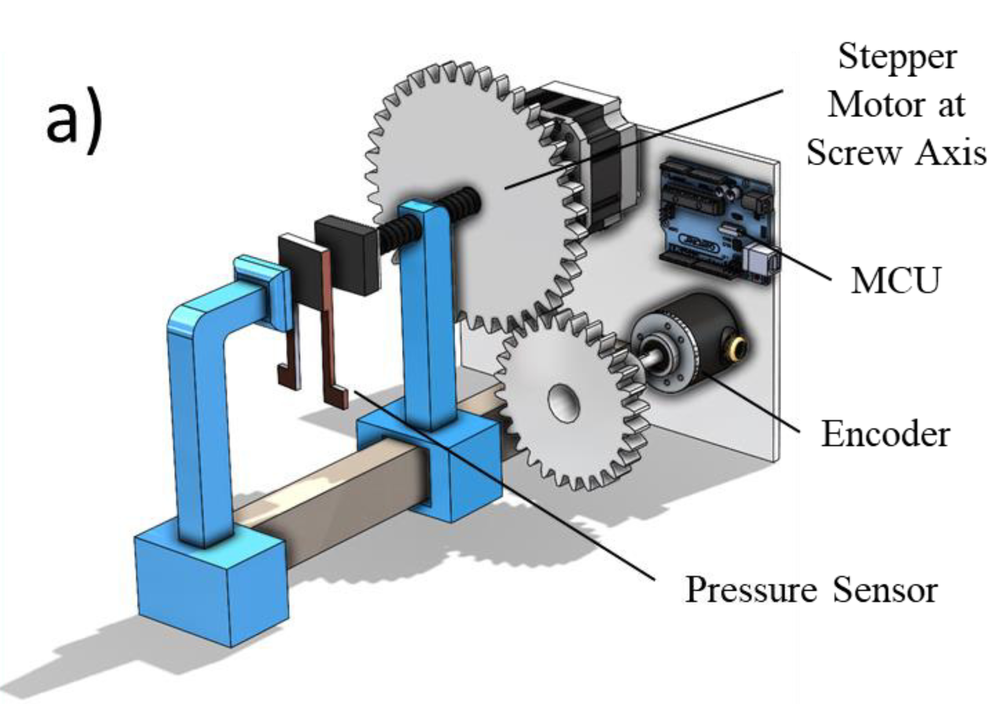
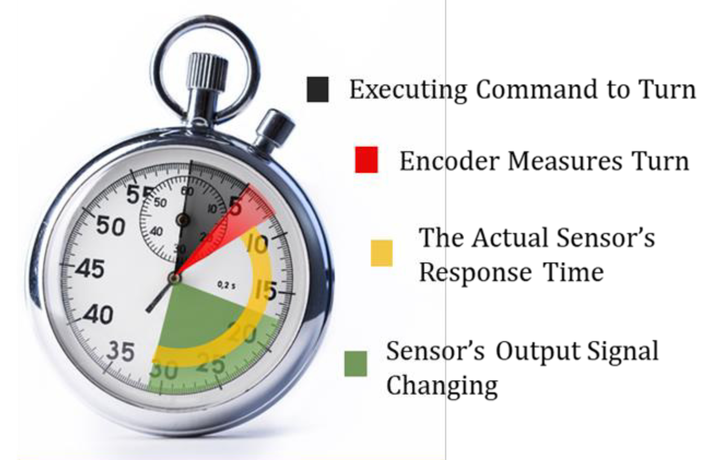
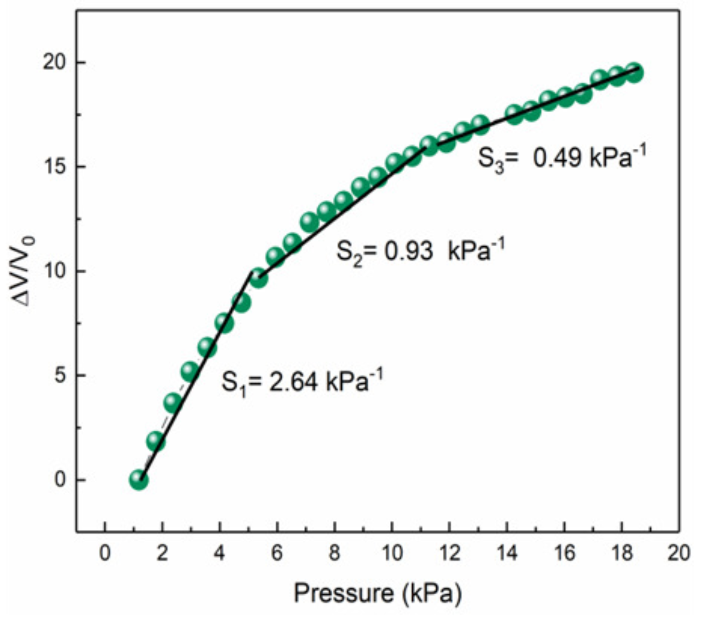
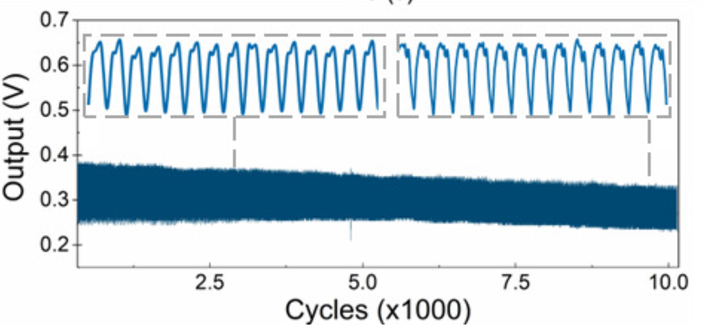

Piezoresistive Pressure Sensor Testbed
Hardware & Protocol for Pulse Wave Monitoring Validation
DOI: 10.1109/LSENS.2023.3300407
Journal: IEEE Sensors Letters
Role: Co-author - Testbed validation, sensor characterization, data analysis


Project Overview
This research presents a novel testing technique and hardware setup for evaluating piezoresistive pressure sensors intended for pulse wave monitoring applications. The testbed addresses critical gaps in traditional sensor characterization methods by providing more accurate response time measurements, programmable pressure profiles, and cost-effective operation compared to expensive force gauges and sourcemeters.
Problem Addressed
- Traditional response time measurement assumes no delay between pressure application and sensor response
- Conventional equipment (force gauges, sourcemeters) is expensive and bulky
- Lack of programmable pressure waveforms for realistic pulse simulation
- Difficulty in validating wearable operation before clinical trials
Hardware Design & Specifications
Mechanical Structure:
- Stationary Base: Fixed platform for sensor placement
- Movable Arm: Driven by stepper motor via screw mechanism
- Gear Assembly: 2:1 gear ratio translating axis rotation to encoder
- Clamps: JORGENSEN 36-inch bar clamps for secure mounting
- 3D Printed Parts: Custom components for the testbed
Electronics & Control:
- Microcontroller: Arduino Nano (8-bit AVR ATmega328)
- Stepper Motor: ROHS 28BYJ-48
- Encoder: 2-phase Incremental Shaft Encoder
- Pressure Sensor: FSR402 (for testbed integration)
- Force Gauge (Calibration): Mark-10
Testbed Specifications:
| Parameter | Specification |
|---|---|
| Pressure Range | 0 - 30 kPa |
| Pressure Resolution | 25 Pa |
| Sensor Sensitivity (5-12 kPa) | 0.93 kPa⁻¹ |
| Response Time (@3.7 kPa) | 261 ms (σ = 5 ms) |
| Durability | 10,000 cycles (minimal degradation) |
| Noise Mitigation | Mechanical padding + shielded wires + capacitor filtering |


Response Time Measurement Innovation
Conventional Method vs. Our Testbed:
| Aspect | Conventional Method | Our Testbed |
|---|---|---|
| Pressure Application Detection | Assumed instantaneous | Encoder-measured with timestamp (t1) |
| Sensor Response Detection | Output stabilization point | Output stabilization with timestamp (t2) |
| Response Time Calculation | Post-processing estimation | t2 - t1 (real-time, per excitation) |
| Accuracy | Limited (ignores application delay) | High (accounts for actual pressure onset) |
Key Advantage:
The testbed calculates response times for each excitation cycle in real-time, unlike conventional methods that rely on post-processing with costly equipment. The encoder integration allows precise measurement of when pressure is actually applied, not just when the sensor responds.
Validation Results
Sensor Testing Comparison (Testbed vs. Mark-10 Force Gauge):
| Sensor Model | Mark-10 Sensitivity (kPa⁻¹) | Testbed Sensitivity (kPa⁻¹) |
|---|---|---|
| MD30-60 | 0.58 | 0.42 |
| DF9-40 | 0.41 | 0.15 |
| RP-S5-ST (1) | 0.71 | 0.50 |
| RP-S5-ST (2) | 0.44 | 0.69 |
| C5-ST-LF50 | 0.35 | 0.54 |
Embedded Testbed Sensor Performance:
- Sensitivity: 0.93 kPa⁻¹ (5-12 kPa range)
- Response Time: 261 ms (±5 ms standard deviation at 3.7 kPa)
- Durability: Minimal degradation after 10,000 cycles (2-4 kPa, 520 ms duration)
- Output Deviation: 2% within batch, 6% across batches (per datasheet)
Programmable Pulse Waveform Generation
Customizable Parameters:
- Pressure Amplitude: User-defined via Arduino input
- Frequency: Adjustable to simulate different heart rates
- Waveform Shape: Programmable to replicate various physiological conditions
- Peak Timing: Control relative occurrence of Percussion (P), Tidal (T), and Diastolic (D) waves
Applications of Programmable Waveforms:
- Cardiovascular Disease Simulation: Tidal wave can be programmed to appear earlier after percussion wave
- Age/Athletic Ability Variation: Accommodate population differences in pulse waveform
- Heart Rate Simulation: Test sensors at different BPMs (resting, active, exercise)
- Blood Pressure Profiles: Simulate normal and hypertensive conditions


Noise Immunity Measures
- Mechanical Noise: Padding between testbed and supporting desk dampens vibrations
- Electromagnetic Noise: Stepper motor shielded with grounded aluminum foil
- Electrical Noise: Shielded wires + capacitor added to stepper motor power line
- Measurement Error Reduction: Each measurement repeated 5 times with mean values reported
- Calibration: Pressure sensor calibrated against Mark-10 force gauge
Components & Equipment
- Arduino Nano (ATmega328)
- 28BYJ-48 Stepper Motor
- 2-phase Incremental Shaft Encoder
- FSR402 Pressure Sensor
- Mark-10 Force Gauge
- JORGENSEN Bar Clamps
- 3D Printer (CTC Electronic)
- Shielded Wires
- Grounded Aluminum Foil
Downloads
- Full IEEE Sensors Letters Paper (PDF)
- Arduino Control Code (INO)
- Calibration Data (Excel)
- 3D Print Files (STL)
Key Innovations
- First testbed with encoder-based response time measurement that accounts for actual pressure application delay
- Cost-effective alternative to expensive force gauges and sourcemeters
- Programmable pulse waveform generation simulating diverse blood pressures and heart rates
- Comprehensive characterization (sensitivity, response time, durability) in single device
- 25 Pa pressure resolution - sufficient for pulse wave monitoring applications
- 10,000-cycle durability testing with customizable pressure profiles
Comparison with Traditional Methods
| Feature | Traditional (Force Gauge + Sourcemeter) | Our Testbed |
|---|---|---|
| Cost | High | Low |
| Portability | Bulky | Compact |
| Response Time Accuracy | Limited (assumes instantaneous application) | High (encoder-measured onset) |
| Programmable Waveforms | No | Yes (P, T, D wave timing adjustable) |
| Per-cycle Response Time | Post-processing only | Real-time per excitation |
| Durability Testing | Manual or semi-automated | Fully automated (10,000 cycles) |
| Physiological Simulation | Limited | Comprehensive (age, athletic ability, disease states) |
Funding
- National Science Foundation (NSF) Awards #2126190 and #2107318
- NSF PATHS-UP ERC (Award #1648451)
Related Publications
- Jafarizadeh, B., Chowdhury, A.H., Sozal, M.S.I., Cheng, Z., Pala, N., Wang, C. "Hardware and Protocol for Testing of Piezoresistive Pressure Sensors for Pulse Wave Monitoring." IEEE Sensors Letters, 2023, 7(8), 2502304.
- Jafarizadeh, B., Chowdhury, A.H., Khakpour, I., Pala, N., Wang, C. "Design Rules for a Wearable Micro-Fabricated Piezo-Resistive Pressure Sensor." Micromachines, 2022, 13, 838.
- Jafarizadeh, B., Chowdhury, A.H., Sozal, M.S.I., Cheng, Z., Pala, N., Wang, C. "Wearable System Integrating Dual Piezoresistive and Photoplethysmography Sensors for Simultaneous Pulse Wave Monitoring." ACS Applied Materials & Interfaces, 2024, 16, 65402-65413.
Conclusion
This study introduced an innovative, cost-effective testbed for comprehensive evaluation of piezoresistive pressure sensors. The hardware enables precise measurement of sensitivity, response time, and durability within 0-30 kPa range at 25 Pa resolution. Key innovations include encoder-based response time measurement (accounting for actual pressure application delay) and programmable pulse waveform generation capability. The testbed successfully validated a commercial pressure sensor achieving 0.93 kPa⁻¹ sensitivity, 261 ms response time, and 10,000-cycle durability. By enabling simulation of diverse physiological conditions (different ages, athletic abilities, disease states), this testbed serves as a vital tool for advancing wearable pulse wave monitoring technology from laboratory to clinical applications.